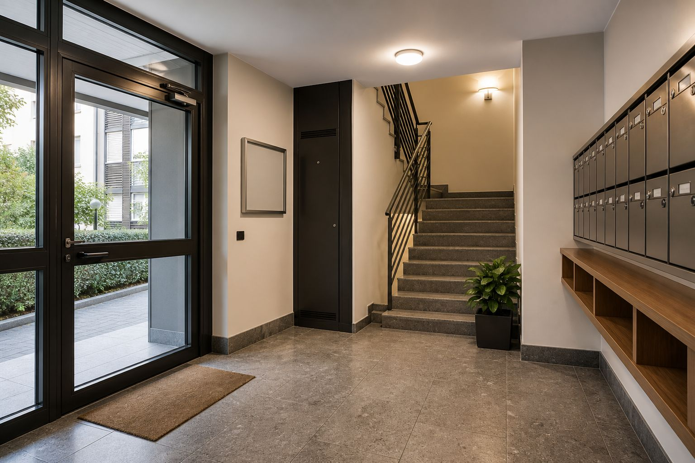
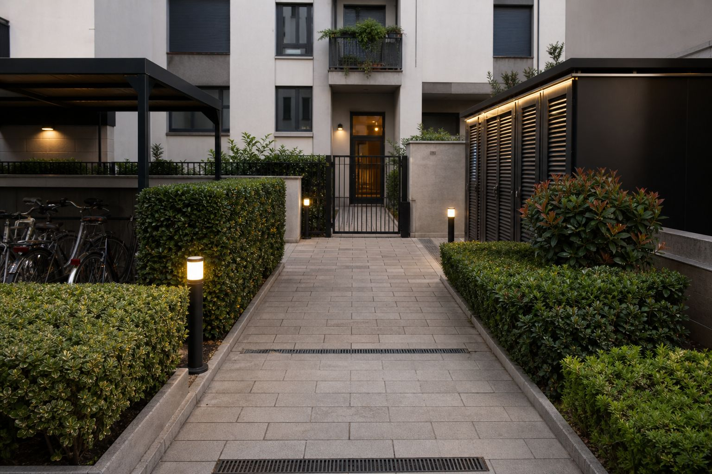
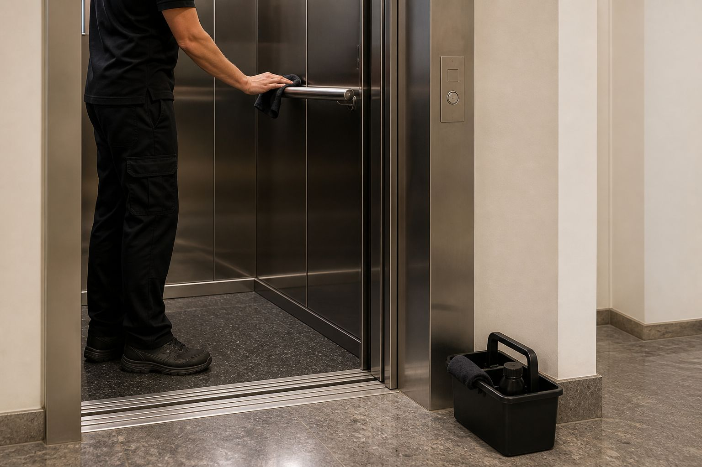
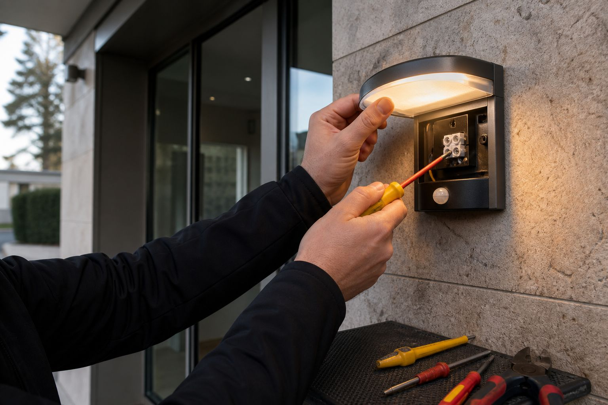
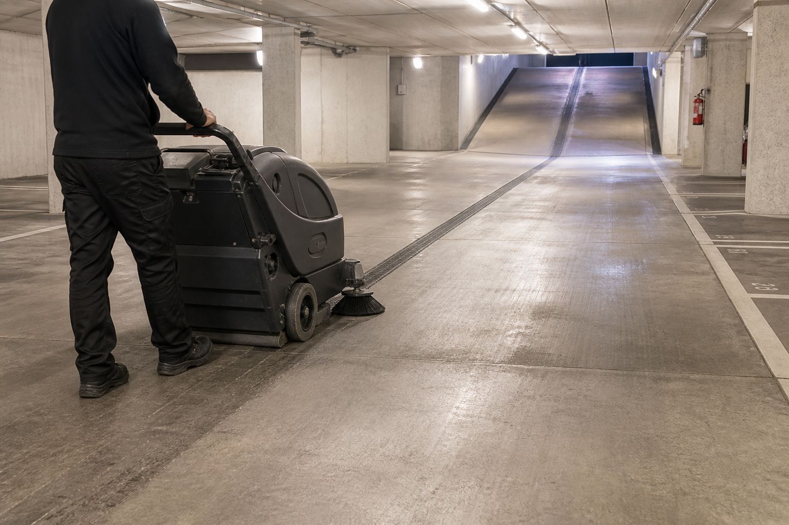
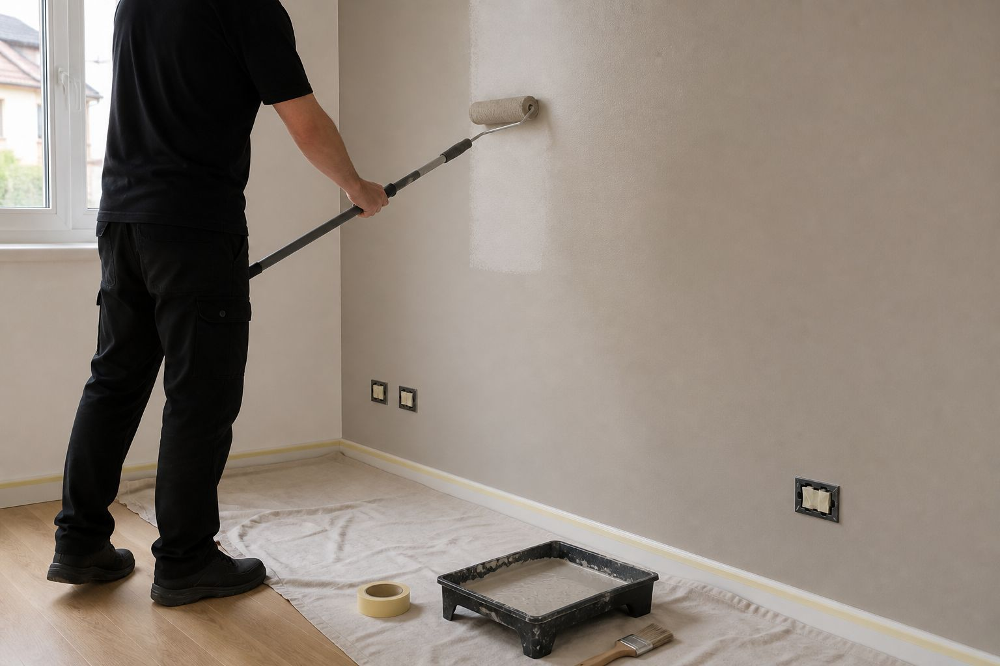
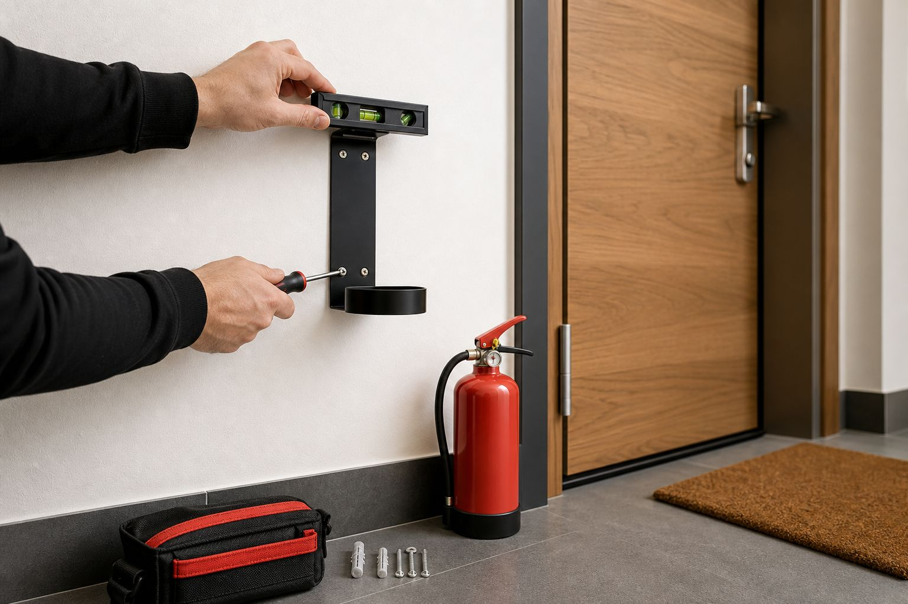
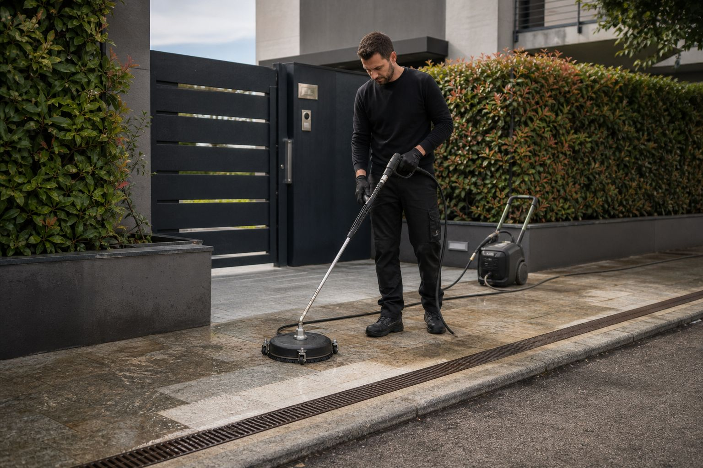

Seguiamo condomini, residence e contesti abitativi condivisi su tutto quello che va fatto nello stabile: parti comuni, piccole riparazioni, esterni, rifiuti. Quello per cui di solito servono l'impresa, il giardiniere e il tuttofare.
Per l'amministratore è un numero, un referente e una fattura, invece di tre fornitori da rincorrere quando i condomini chiedono conto. Lavoriamo tra Bergamo, Brescia, Milano, Val Seriana e Lago di Garda.

Frequenza, giorni e aree li concordiamo con l'amministrazione, e il giro si ripete sempre uguale. I residenti sanno quando passiamo. Tu smetti di essere quello che deve ricordarselo.
Per le urgenze — un vetro rotto, una perdita nel locale tecnico, un cancello che non chiude — ci trovi 7 giorni su 7.
"Il condomino non scrive quando le scale sono a posto. Scrive quando la lampada del pianerottolo è spenta da tre giorni."
— Guasti segnalati con foto, prima che arrivi la mail
Scale, androni, ingressi, ascensori, corridoi e aree comuni: passaggio di pulizia con prodotti adatti agli spazi che tutti attraversano più volte al giorno.
Se troviamo un guasto — una lampada bruciata, un'infiltrazione sul muro delle scale, una porta che non chiude bene — la foto arriva all'amministratore. Prima della mail del condomino del terzo piano.
Lampadine, rubinetti che perdono, maniglie e serrature, aspiratori fermi, silicone da rifare, i piccoli guasti dei locali tecnici: li sistemiamo mentre siamo lì, senza aprire una pratica a parte.
Fuori passiamo l'idropulitrice su vialetti e camminamenti, tagliamo prato e siepi, portiamo via i rifiuti. In assemblea porti una voce sola, non tre preventivi da far approvare.

Siamo una cooperativa: nel tuo stabile entrano squadre organizzate, non volti nuovi ogni mese. Sanno quale portone si blocca, dove sta il contatore, a che ora escono i cassonetti. Ogni passaggio viene verificato prima di andare via, e quello che non va lo segnaliamo con una foto invece di lasciarlo lì per il giro dopo.
Scale, ascensori, autorimesse ed esterni: quello che i condomini attraversano ogni giorno.






Dicci quanti stabili, quanti piani e cosa ti fa perdere più tempo oggi. Ti rispondiamo con un preventivo.
Richiedi un preventivo Scrivici su WhatsApp